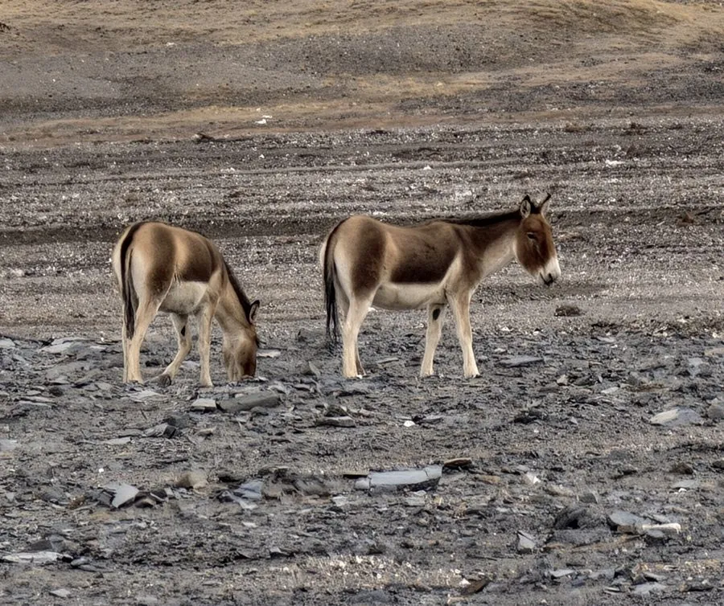

哺乳动物 · 动物界
藏野驴 Equus kiang

青藏高原特有的野生驴，体形健壮、毛色红棕、腹部雪白，奔跑能力强，常与越野车赛跑，是国家一级保护动物。
- 分类
- 门脊索动物门纲哺乳纲目奇蹄目科马科属马属
- 栖息环境
- 青藏高原海拔 2700–5400 米的高寒草原、荒漠与山地
- 地理分布
- 中国青藏高原及印度、尼泊尔、不丹的边境高海拔地区
- 保护级别
- IUCN 无危（LC）；中国国家一级保护动物
物种志
藏野驴体长 1.8–2.2 米，肩高 1.3–1.4 米，体重 250–400 kg，是青藏高原体型最大的野生有蹄类之一。它的被毛为红棕至沙褐色，腹部和四肢内侧雪白，脊背有一条深色纵纹，四肢修长，蹄小而坚实，耳朵长而直立。
藏野驴分布于青藏高原及其周边的高寒草原、荒漠和山地，从中国西藏、青海、新疆、甘肃到印度、尼泊尔、不丹的边境地区，栖息于海拔 2700–5400 米的区域。它结成 5–50 只的群体，以针茅、苔草等为食，多在晨昏取食和饮水，善于长时间奔跑，时速可达 60–70 km/h，有时会与汽车并排奔跑。雄驴在繁殖季争夺配偶，雌兽妊娠期约 11–12 个月，每胎 1 仔。由于栖息地相对完整和严格保护，藏野驴种群总体稳定，中国将其列为国家一级保护动物。
形态与习性
- 食性针茅、苔草等高寒草本植物
- 体长1.8–2.2 m，肩高 1.3–1.4 m
- 体重250–400 kg
- 寿命野外约 20–25 年
- 繁殖妊娠期约 11–12 个月，每胎 1 仔
- 速度奔跑时速可达 60–70 km/h
- 社会结构结成 5–50 只的群体
趣味知识
- 藏野驴常与越野车并排奔跑，因此有了“赛跑健将”的称号。
- 它的背脊有一条深色纵纹，腹部和四肢内侧雪白。
- 藏野驴是青藏高原体型最大的野生有蹄类之一。
- 雄性藏野驴在繁殖季会互相追逐、踢咬争夺配偶。